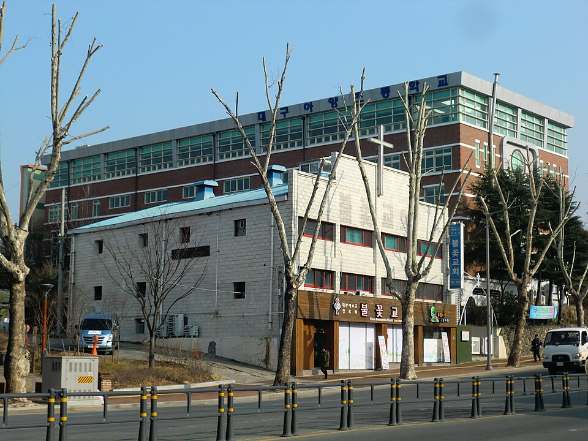

대구 동구는 한 구 안에서 생활권이 크게 갈립니다. 신천과 동대구역 가까운 쪽, 아양교와 동촌 쪽, 그리고 안심·율하 쪽이 각각 다른 동네처럼 움직입니다. 청구고(청구고등학교)·강동고(강동고등학교)·영신고(영신고등학교)·정동고(정동고등학교) 같은 고등학교와 동촌중(동촌중학교)·청구중(청구중학교)·신기중(신기중학교)·율원중(율원중학교)이 서로 멀리 떨어져 있어, 학원가가 가까운 집과 그렇지 않은 집의 저녁이 완전히 다릅니다. 버스로 환승까지 해야 하는 집이라면 집으로 오는 1:1 중등 영어과외나 고등 수학과외를 따로 찾게 됩니다.
오늘은 동구로 직접 찾아가는 선생님들 가운데 맡는 과목이 서로 다른 두 분을 소개합니다. 한 분은 영어를 초등 고학년부터 고3까지 보는 선생님, 한 분은 수학을 초4부터 고3까지 보는 선생님입니다. 두 분 다 방문과 화상을 모두 진행합니다.
동구에서 중등 영어과외 문의가 들어오는 시점은 대개 중1 2학기입니다. 초등 때는 단어만 외워도 점수가 나왔는데, 지문이 길어지고 서술형이 붙으면서 "공부는 했는데 점수가 안 나온다"가 시작됩니다. 이 선생님을 소개하는 이유는 학교 시험을 기준으로 수업을 짜는 쪽이기 때문입니다. 교재 진도를 먼저 빼는 방식이 아니라, 다니는 학교의 시험 범위에 맞춰 반복할 개념과 오답을 관리합니다.
수업 밖의 관리가 촘촘한 편입니다. 플래너와 대화방으로 매일 단어와 녹음 과제를 확인하기 때문에, 혼자서는 공부 습관이 잡히지 않는 학생에게 맞습니다. 중·하위권 학생을 많이 봐 왔고, 초등 고학년부터 고3까지 한 사람이 이어서 볼 수 있어 학년이 바뀔 때마다 처음부터 다시 설명할 필요가 없습니다. 방문 지역이 동구 한 곳이라 시간대를 잡기가 비교적 수월한 편입니다.
이ㅇ은 선생님 상세 프로필 →동구에서 고등 수학과외를 따로 찾는 이유는 대개 중3에서 고1로 넘어가는 자리입니다. 중학교까지는 따라갔는데 고등학교 첫 시험에서 한 번 밀리면 그 뒤로는 진도에 끌려다니게 됩니다. 이 선생님을 소개하는 이유는 학생이 직접 설명하게 하는 수업이기 때문입니다. 남에게 설명할 수 있어야 개념을 온전히 이해한 것이라는 기준으로, 아는 것과 아는 것 같은 것을 수업 중에 갈라냅니다.
이해는 되는데 문제에 적용이 안 되는 학생에게 특히 맞는 방식입니다. 기초와 응용을 함께 가면서 심화 문제까지 보고, 시험 기간에는 커리큘럼을 따로 짭니다. 과제와 오답을 관리하고 학부모·학생과 함께 수업 내용을 공유하기 때문에 집에서도 진행 상황이 보입니다. 동구와 북구를 함께 다니므로 이사가 있어도 수업을 이어 가기 쉽습니다.
김ㅇ호 선생님 상세 프로필 →학교마다 진도와 시험 범위가 달라서, 학교별로 준비법을 따로 정리해 두었습니다.
관련 검색어: 대구동구영어과외 · 대구동구수학과외 · 청구고내신 · 동촌중영어과외 · 신암동과외
👉 동구 영어과외 선생님 · 동구 수학과외 선생님 · 동구 관리 학교 전체 보기